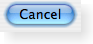
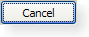
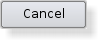
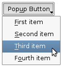
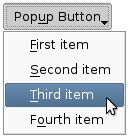

| Home · All Classes · Modules · QSS HELP · QSS 案例 · VER007 HOME |
该QPushButton窗口部件提供了一个命令按钮。More...
通过继承QCommandLinkButton。
该QPushButton窗口部件提供了一个命令按钮。
按钮或命令按钮，也许是任何图形用户界面中最常用的部件。推（点击）按钮来命令计算机执行某些操作，或回答一个问题。典型的按钮是确定，应用，取消，关闭，是，否和帮助。
一个命令按钮是长方形，通常会显示描述其操作的文本标籤。快捷键可以首选使用的字符在文本中的＆符号前面的指定。例如：
QPushButton *button = new QPushButton("&Download", this);
在这个例子中，快捷键是Alt+D。请参阅QShortcut有关详细信息的文档（显示的实际符号，使用“\u0026\u0026” ） 。
按钮显示文本标籤，以及可选的小图标。这些可以通过构造函数来设置和使用后来改setText（）和setIcon（ ） 。如果禁用该按钮上的文字和图标的外观将会被操纵方面的图形用户界面风格，使按钮看起来“已禁用” 。
一个按钮发出的信号clicked（）时，它是由鼠标，空格键或键盘快捷方式激活。连接到这个信号来执行按钮的操作。推动按钮也提供不太常用的信号，例如，pressed（）和released（ ） 。
在对话框的命令按钮是默认自动默认按钮，即会自动成为默认的按钮，当他们收到的键盘输入焦点。默认按钮是一个按钮，当用户按下Enter键或Return键在对话框被激活。您可以更改此setAutoDefault（ ） 。需要注意的是自动默认按钮保留一点点额外的空间，它是要订一个默认按钮指示灯。如果你不想在你的按钮这个空间，调用setAutoDefault （假） 。
由于酒店地处中央，按钮控件已经成长为容纳了大量的变化，在过去的十年。微软风格指南现在显示的Windows按钮约十个不同国家和文本意味着有几十个，当的特征的所有组合都考虑到了。
最重要的模式或状态是：
作为一般规则，使用一个按钮时，应用程序或对话框窗口，当用户点击它执行一个动作（如适用，取消，关闭和帮助）and当插件被认为具有广泛的，矩形的形状，文本标籤。小，一般方形按钮，改变窗口的状态，而不是执行中的的右上角一个动作（如按钮QFileDialog）没有命令按钮，但工具按钮。 Qt提供了一个特殊的类（QToolButton），这些按钮。
如果你需要切换行为（见setCheckable（））或者一个按钮，自动重复启动信号时被按下一样在滚动条中的箭头（参见setAutoRepeat（ ） ） ，一个命令按钮可能不是你想要的。当有疑问时，可使用的工具按钮。
命令按钮的变化是菜单按钮。它们提供的不只是一个命令，但是有几个，因为他们被点击时，弹出一个选项菜单。使用方法setMenu（ ）一个弹出菜单与按钮相关联。
其他类的按钮选项按钮（请参阅QRadioButton）和复选框（见QCheckBox） 。
|  | A push button shown in the Macintosh widget style.
请注意，当一个按钮的宽度变得小于50或它的高度变得比30小，按钮的角被改变从圆形到方形。使用setMinimumSize（ ）函数来防止这种行为。 |
|  | A push button shown in the Windows XP widget style. |
|  | A push button shown in the Plastique widget style. |
在Qt中，QAbstractButton基类提供了大部分的模式和其他的API ，和QPushButton提供GUI逻辑。看QAbstractButton有关API的详细信息。
该parent的说法，如果不是没有，原因self通过Qt的，而不是PyQt的拥有。
构造一个按钮，没有文字和parent。
该parent的说法，如果不是没有，原因self通过Qt的，而不是PyQt的拥有。
构造一个按钮与父parent和文本text。
该parent的说法，如果不是没有，原因self通过Qt的，而不是PyQt的拥有。
构造一个按钮用icon和text和parent。
请注意，您也可以通过一个QPixmap对象为一个图标（这要归功于C + +中提供的隐式类型转换） 。
从重新实现QObject.event（ ） 。
从重新实现QWidget.focusInEvent（ ） 。
从重新实现QWidget.focusOutEvent（ ） 。
初始化option与其它的值QPushButton。当他们需要一个这种方法是有用的子类QStyleOptionButton，但不希望在所有的信息填写自己。
See also QStyleOption.initFrom（ ） 。
从重新实现QWidget.keyPressEvent（ ） 。
返回按钮相关的弹出菜单或0 ，如果没有弹出式菜单已设置。
See also setMenu（ ） 。
从重新实现QWidget.minimumSizeHint（ ） 。
从重新实现QWidget.paintEvent（ ） 。
关联弹出菜单menu与此按钮。这将打开该按钮的菜单按钮，这在一些风格会产生一个小三角按钮的文本的右侧。
菜单的所有权not转移到按钮。
|  |  | Push buttons with popup menus shown in the Plastique widget style (left) and Cleanlooks widget style (right). |
See also menu（ ） 。
这种方法也是一个Qt槽与C + +的签名void showMenu()。
显示（弹出）相关的弹出式菜单。如果没有这样的菜单，这个函数什么都不做。此函数不返回，直到弹出菜单已经被用户关闭。
从重新实现QWidget.sizeHint（ ） 。
| PyQt 4.10.3 for X11 | Copyright © Riverbank Computing Ltd and Nokia 2012 | Qt 4.8.5 |